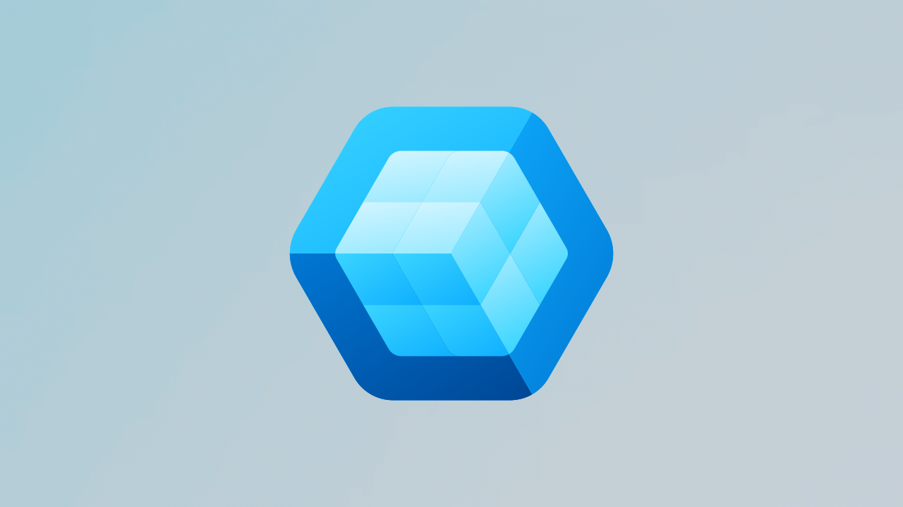

Windows App SDK 1.8 Released
Windows App SDK 1.8 has been released by Microsoft, which are the set of APIs and tools to help create native Windows desktop applications using either C++ and Win32 or C# and .NET that can also leverage the modern controls with Fluent design using WinUI. Windows App SDK 1.8 provides fixes including issues with NavigationView when setting SelectedItem to null didn't clear the selection state in collapsed mode, TabView where closing a tab would move the keyboard focus to Add tab buttons instead of the newly created tab along with other issues including fixing an issue where hover effects of other windows for the app could flicker when at least one Windows has ExtendsContentIntoTitleBar was set to true and a UI consistency where SplitButton appeared shorter than standard Button controls. You can find the latest version of Windows App SDK on NuGet.
Windows App SDK 1.8 beings new Windows AI APIs that can be used with a local language model for Copilot + PCs where applications can respond to prompts, recognise text in images, describe the contents of an image, remove an object from an image and more. Applications can determine if an input exceeds the allowable size for a Text Summariser call with Prompt Size Limit reporting which enables developers to adjust input accordingly based on token count rather than byte or character length and since this can vary over time applications should treat this as a dynamic limit. Text Rewriter tone allows rewriting of text with specific tones from casual for more informal and conversational content using natural and spontaneous phrasing that preserves meaning and format, formal potion transforms text into a polished professional version that maintains the original structure and details with precise language suitable for a formal context or the general option which retains the original tone and intent ensuring the meaning remains unchanged.
Windows App SDK 1.8 has been converted to a NuGet metapackage where each component of Windows App SDK is not a component NuGet package which is listed as a dependency by the metapackage which enables developers to choose the metapackage or select specific packages for their applications to only include the APIs and functionality needed by their application. Windows App SDK 1.8 also offers a modernised file and folder picker experience with the Microsoft.Windows.Storage.Pickers which improves over Universal Windows Platform file and folder pickers which didn't support elevated process support with simplified usage where a WindowId can be provided in the constructor compared to the existing UWP-based picker which required initialising a window handle for window association.
Source: Latest stable channel release notes for the Windows App SDK